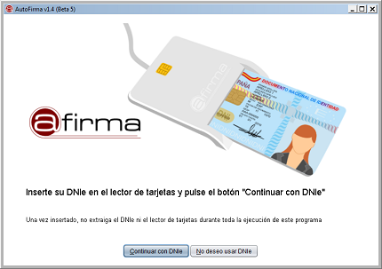

En esta pantalla el programa queda a la espera de que inserte su DNI electrónico en uno de los lectores de tarjetas inteligentes instalados y configurados en el sistema. Esta pantalla sólo aparecerá si se ha detectado algún lector de tarjetas inteligentes instalado y configurado en el sistema. Los controladores del DNIe no son necesarios. Una vez lo inserte, pulse el botón "Continuar con DNIe" para avanzar a la siguiente pantalla y cargar sus certificados de firma.
Si no dispone usted del DNI electrónico o no desea utilizarlo, pulse el botón "Usar cualquier certificado" o
la tecla Escape. Si no utiliza DNI electrónico se le permitirá seleccionar cualquier
certificado importado en su sistema operativo.